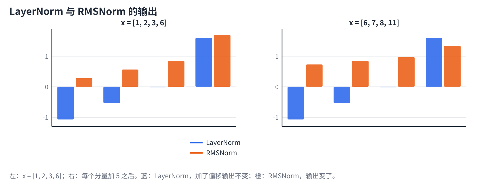

第 13 章 · RMSNorm：不减平均值行不行，省在哪
本地运行
git clone https://github.com/wikieden/beyond-transformer
cd beyond-transformer/code/notebooks
pip install jupyterlab torch numpy
jupyter lab ch13_rmsnorm.ipynb也可以下载后直接用 VS Code 打开 .ipynb 运行。需要 GPU 的章节在 Colab 里选「代码执行程序 → 更改运行时类型 → GPU」。
本章回答：LayerNorm 做两件事：减去平均值（re-centering）、除以标准差（re-scaling）。RMSNorm 只做第二件，把“除以标准差”换成“除以均方根”。少做一件事，模型还好不好用？它对什么不变、对什么不再不变？norm 只占不到 1% 的 FLOPs，为什么大家还在乎它快不快？
讲解日期：2026-11-26 · 上一章：第 12 章 Pre-LN · 下一章：第 14 章 SwiGLU
对应原文：RMSNormtransformer-deep-dive/materials/text/papers/rmsnorm-1910.07467.txt摘要 L18–L24、§3 L170–L180（“re-scaling invariance 才是关键”，式 4）；LayerNormlayernorm-1607.06450.txt§3；CS336 a1 handout §3.5.1 L956–L960（a1 用的 RMSNorm，式 4）；CS3362025 Lecture 3 - architecture.txtL138–L175（“FLOPs 不等于运行时间”、数据搬运）
本章缩写：RMS = Root Mean Square（均方根：先平方、再平均、再开根号）；re-centering（重新居中：减去平均值）；re-scaling（重新缩放：除以一个尺度）；γ、β（LayerNorm 可学习的缩放和平移，a1 里 RMSNorm 的缩放记作 g）；ε（防除零的小数）；bf16 = bfloat16（16 位的“脑浮点”格式）。全部缩写见 附录 · 缩写与术语表
讲解
第一步：LayerNorm 去掉一半（2026-11-26）
类比：给一组考试成绩做标准化。 LayerNorm 是“先减平均分、再除以标准差”：结果平均 0 分、方差 1。RMSNorm 只做后一半，而且除的是“各分数平方的平均再开根号”（均方根），不管平均分是多少。
（RMSNorm 式 4，L180；a1 §3.5.1 式 4，L956–L960。）
数字演示（x = [1, 2, 3, 6]，γ = g = 1、β = 0）：
| 量 | 值 |
|---|---|
| 平均值 μ | 3 |
| 标准差 σ | 1.8708 |
| 均方根 RMS | √(50/4) = 3.5355 |
| LayerNorm | [−1.069, −0.5345, 0, 1.6036]（均值 0、方差 1） |
| RMSNorm | [0.2828, 0.5657, 0.8485, 1.6971]（均方根 1，均值不是 0） |
均值为 0 时 RMS 就等于标准差，两者结果一样；均值离 0 越远差别越大。
一句话：RMSNorm 不减平均值，只除以均方根，再乘可学习的 g；没有 β。
第二步：对什么不变：只剩“缩放不变”（2026-11-26）
re-centering 不变：每个分量都加同一个数，LayerNorm 的输出不变（减平均值把它减掉了）。re-scaling 不变：整体乘一个正数，两种 norm 的输出都不变（除以尺度把它除掉了）。
数字演示（x = [1, 2, 3, 6]）：
| 变换 | LayerNorm 输出变化 | RMSNorm 输出变化 |
|---|---|---|
| 每个分量 +5 | 0 | 0.4475 |
| 整体 ×3 | 0 | 0 |
RMSNorm 论文的假设（§3，L170–L175）：LayerNorm 好用主要靠 re-scaling 不变（不管上一层输出多大，送进下一层的量级都被拉回来），re-centering 不太重要。实验上 RMSNorm 和 LayerNorm 效果差不多，于是 LLaMA、Qwen、Mistral、DeepSeek 都用 RMSNorm（Lecture 3 L138–L146）。

图 13-1 · 同一个 x = [1, 2, 3, 6]。左：LayerNorm（蓝）和 RMSNorm（橙）的输出；右：给每个分量加 5 之后再做，LayerNorm 的柱子完全不动，RMSNorm 的柱子变了（整体往一边挤）一句话：LayerNorm 对平移和缩放都不变，RMSNorm 只对缩放不变；论文认为缩放不变才是关键，实验上两者效果相当。
第三步：省在哪：FLOPs 不等于运行时间（2026-11-26）
Lecture 3（L166–L175）的说法：矩阵乘法占了绝大部分 FLOPs，norm 不到 1%；但 norm 是逐元素的操作，每个数读一次、写一次，算得少、搬得多，运行时间里它占的比例比 FLOPs 大得多。少做一步就少读写一遍。
数字演示（d = 4096 的一个向量，粗略数逐元素运算）：
| 要做的事 | 运算次数 | |
|---|---|---|
| LayerNorm | 求均值、减均值、平方求和、除以标准差、乘 γ、加 β | 约 28,672 |
| RMSNorm | 平方求和、除以 RMS、乘 g | 约 16,384（少 43%） |
参数也少一半（没有 β）：32 层、每层 2 个 norm 加最后 1 个、d = 4096、bf16 存，LayerNorm 1040 KB，RMSNorm 520 KB。这点参数对模型大小无所谓，但每次前向都要从显存读一遍。
很多模型还顺手去掉了线性层的偏置（bias），理由一样：省参数、省搬运，效果不受影响，还更稳（Lecture 3 的“no bias terms”）。
场景代码：PyTorch 的 RMSNorm（真实库调用，nn.RMSNorm 从 2.4 起自带；本书 chapter-code 只用 NumPy，这段没跑过）：
norm = nn.RMSNorm(4096, eps=1e-5) # 只有一个权重 g，没有 bias
y = norm(x) # x / sqrt(mean(x²) + eps) * g
# 手写版：x * torch.rsqrt(x.pow(2).mean(-1, keepdim=True) + eps) * g
a1 要你自己实现 RMSNorm 模块（§3.5.1），并做“去掉所有 RMSNorm 再训”的消融（layer_norm_ablation）。
一句话：norm 的 FLOPs 很少，但它是逐元素操作、主要花在读写上；RMSNorm 少一步运算、少一份参数，读写就少，于是更快。
动画演示：给输入加一个偏移，两种 norm 怎么反应

可交互版：animations/13-rmsnorm.html（滑块：给每个分量加的偏移、整体缩放倍数）。
怎么看：
- 左边是输入 x 的 4 根柱子，中间是 LayerNorm 的输出，右边是 RMSNorm 的输出（第一步）；
- 拖“偏移”：输入整体上移，LayerNorm 的输出纹丝不动，RMSNorm 的输出越来越接近“全都一样”（第二步）；
- 拖“缩放”：输入变大变小，两种输出都不动。
练习与作答记录
题 1（第一步）：x = [−2, 0, 2, 4]，算 LayerNorm 和 RMSNorm 的输出（γ = g = 1、β = 0、ε 忽略）。
题 2（第二步）：x = [3, 3, 3, 3]（所有分量相同），LayerNorm 和 RMSNorm 分别输出什么？哪个更“有信息”？
题 3（第三步）：一个 d = 8192 的模型，每个 token 每层两次 norm。用自己的话说，为什么 norm 占的 FLOPs 很少，换成 RMSNorm 却能看到可测的提速？
口诀
LayerNorm 减均值再除标准差；RMSNorm 不减均值，只除均方根。
平移、缩放都不变是 LN；只剩缩放不变是 RMS，缩放才是关键。
FLOPs 不是运行时间：逐元素操作搬得多、算得少，少一步就少读写一遍。
本章复习卡片
必背：B41（RMSNorm 的公式、对平移不再不变、为什么更快）。练习做完后，按答错、卡住的地方再补。
附录 · 延伸阅读
留给以后深入学习用，不影响本章主线。★ 是建议先读的。
推荐阅读
| 读什么 | 读哪里 | 读它为了什么 |
|---|---|---|
| ★ Root Mean Square Layer Normalization（Zhang & Sennrich 2019） | §3 L170–L180（式 4） | RMSNorm 的定义和“缩放不变才是关键” |
★ CS336 2025 Lecture 3 - architecture.txt |
L138–L175 | 各家用哪种 norm、FLOPs 不是运行时间 |
| CS336 a1 handout | §3.5.1 L956–L960；§7.3 layer_norm_ablation L2059 | 作业里的 RMSNorm 和消融 |
| 前作 第 19 章 LayerNorm | 全部 | LayerNorm 的基础 |
| 《数学与实验统计》第 39 章、第 47 章 | 归一化；roofline | 不变性的数学；“搬运瓶颈”怎么算 |
数学原理
- 方差分解：RMS² = σ² + μ²，所以 μ = 0 时 RMS = σ。
- 不变性：LN(x + c·1) = LN(x)，LN(a·x) = LN(x)（a > 0）；RMS 只有后者。
- 算术强度：逐元素操作每读写一个数只做几次运算，远低于 GPU 的“算力 / 带宽”比，受带宽限制（memory-bound）。
公式清单
| 公式 | 意思 |
|---|---|
| \(\gamma\odot(x - \mu)/\sqrt{\sigma^2 + \varepsilon} + \beta\) | LayerNorm |
| \(g\odot x/\text{RMS}(x)\) | RMSNorm |
| \(\text{RMS}(x) = \sqrt{\frac1d\sum x_i^2 + \varepsilon}\) | 均方根 |
| \(\text{RMS}^2 = \sigma^2 + \mu^2\) | 两者的关系 |
代码对照：把本章的数字用代码算一遍
NumPy。代码在仓库本地
beyond-transformer/solutions/chapter-code/ch13_rmsnorm.py，配套测试tests/test_ch13.py，notebook 在notebooks/ch13_rmsnorm.ipynb：
bash cd beyond-transformer/solutions/chapter-code uv run python ch13_rmsnorm.py uv run pytest tests/test_ch13.py
讲义 ↔ 代码：
| 讲义 | 公式 | 写法 | 跑出来 |
|---|---|---|---|
| 第一步 两种 norm | 式 4 | layer_norm(X)、rms_norm(X) |
[−1.069, …]、[0.2828, …] |
| 第二步 不变性 | 平移、缩放 | invariances() |
RMS 平移后变 0.4475 |
| 第三步 运算与参数 | 粗略计数 | op_count(4096)、param_bytes(4096, 65) |
少 43%；1040 vs 520 KB |
关键几行：
return g * (x - x.mean()) / np.sqrt(x.var() + eps) + b # LayerNorm：减均值、除标准差、乘 γ 加 β
return x / np.sqrt((x * x).mean() + eps) * g # RMSNorm：只除均方根、乘 g
代码里才看得到的 2 件事：
- ε 加在根号里面：RMS 很小时防止除零；a1 规定 ε = 1e-5，和这里一样。
- 实际实现要先升精度：bf16 下直接平方求和容易溢出或丢精度，a1 提示先把 x 转成 float32 算 RMS，再转回原来的类型；这一步 NumPy 版本里看不到。
自己改一改（不影响练习答案）：
- 把 x 改成 [−3, −1, 1, 3]（均值 0），两种 norm 的输出是不是一样？
- 把
op_count换成你自己数的版本（比如把“除以”算成乘以倒数），比例变多少？